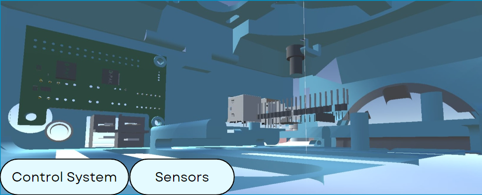

Components Used:
-
Control System
- This is the brain of the robotic arm, responsible for processing inputs from sensors and sending commands to the actuators.
- A microcontroller for low-level control and a computer for high-level tasks and user interface.
-
Sensors
- Sensors collect data about the environment and the state of the robotic arm, such as position, speed, and force.
- Encoders ensure the arm's joints move to precise positions to weld car parts accurately.
- Force sensors help in assembling delicate components like electronic parts without applying too much force.
- Vision systems guide the arm to pick and place components from a conveyor belt, ensuring the correct parts are used.
- Proximity sensors detect nearby obstacles or humans, stopping the arm to prevent accidents.
- Temperature sensors monitor the arm's motor and joint temperatures, preventing overheating during continuous operation.
-
Actuators
- Actuators convert electrical signals from the control system into physical movement.
- Electric motors at each joint for precise movement.
-
Joints
- Joints connect the segments of the robotic arm and allow for movement in various directions.
- A revolute joint providing rotation at the shoulder, elbow, and wrist.
-
Power Supply
- The power supply provides the necessary electrical energy for the control system, actuators, and sensors.
-
End Effector
- The end effector is the tool attached to the end of the robotic arm that interacts with objects.
- A simple two-fingered gripper for picking and placing objects.
-
Links
- Links are the rigid segments that form the structure of the robotic arm.
- Two links (upper arm and forearm) made of lightweight, rigid materials.
-
Base
- A heavy, stable platform with an integrated power supply and control unit.
-
Table
- A stable surface for mounting the robotic arm and placing objects to be manipulated.
-
Object
- The item that the robotic arm interacts with during its operation.